Claudius Ptolemy: Greco-Roman (100–170)
Egypt became a Roman province in 30 BCE, and in the year 100 CE, Claudius Ptolemy was born in Alexandria, Egypt. Ptolemy would soon become famous as a mathematician, an astronomer, and a geographer. He is known today for his famous work the Almagest, which is an ancient treatise on astronomy that consists of thirteen books. Although, again, we are lacking details about this brilliant mathematician from ancient times, we can deduce some information about his life. Because the Almagest was written in Greek, we believe that he descended from a Greek family living in Egypt. We know today that he made all of his astronomical observations from Alexandria between the years 127 and 141 CE.
Ptolemy’s theory of planetary motion held that the universe was geocentric, that is, the earth was the center of the universe. This thinking remained intact until the Renaissance, when Nicolaus Copernicus (1473–1543) a Polish astronomer, put forth a heliocentric theory, placing the sun at the center of the universe and indicating that the earth was one of the planets orbiting it. Yet it was the German mathematician and astronomer Johannes Kepler (1571–1630) who, with his three famous laws of elliptical planetary motion, defined the path of these planetary rotations about the sun (see chap. 13).
To do his mathematical calculations of planetary motion, Ptolemy created a table of chords, which was an early form of trigonometric functions, largely equivalent to the sine function. It is perhaps because of his discoveries related to these chords that we best know of Ptolemy’s work. He needed to be able to approximate the lengths of chords in circles in terms of the radius of the circle and the angle cut off by the chord. Therefore, to derive his chord tables, he created a theorem. His chord function was, as mentioned above, related to the sine function:
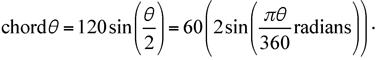
But this is not all he was able to do while examining chords: He further came to an approximation of
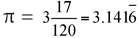
by using a regular polygon of 360 sides inscribed in a circle and working with the chords1; and he used chord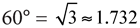
.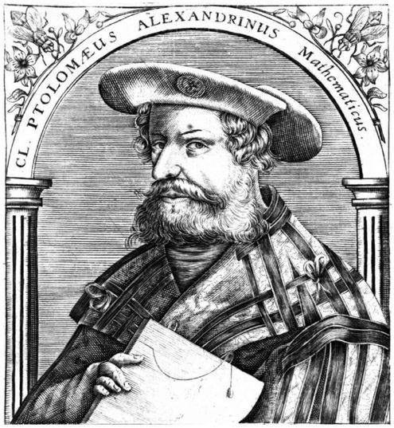
Figure 7.1. An early Baroque rendition of Claudius Ptolemy (etching by Theodor de Bry). http://penelope.uchicago.edu/Thayer/E/Roman/Texts/Ptolemy/Tetrabiblos/home.html.
He is also well known for having established geometric theorems, including a rather-unusual relationship among regular shapes inscribed in a circle. For example, in chapter 10 of book 1 of the Almagest, Ptolemy produced geometric theorems that he used to compute the chords discussed above. He claimed that a regular pentagon, hexagon, and decagon—all inscribed in the same circle—would have an unexpected relationship. When the regular pentagon, hexagon, and decagon are inscribed in the circle, the area of the square on one side of the pentagon is equal to the sum of the areas of the squares on one side of the hexagon and on one side of the decagon.
Furthermore, we well know Ptolemy because of the theorem that he developed and that bears his name: Ptolemy’s theorem. It states that in a cyclic quadrilateral (i.e., one that is inscribed in a circle), the product of the diagonals is equal to the sum of the products of the opposite sides. The converse of this theorem is also true: if a quadrilateral is such that the product of the diagonals is equal to the sum of the products of the opposite sides, then the quadrilateral can be inscribed in a circle (meaning that each of the four vertices lies on the same circle).
We will explore this in figure 7.2. There we have a quadrilateral ABCD inscribed in the circle O, such that AC · BD = AB · CD + AD · BC.
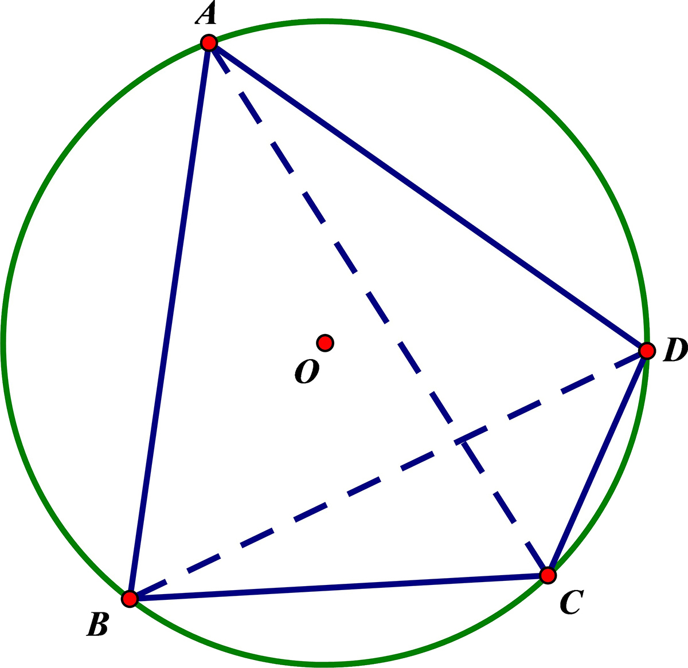
Figure 7.2.
Ptolemy’s theorem can only be established with rigid figures, that is, figures whose given information can only describe one figure. For example, a quadrilateral whose side lengths are given can take on various shapes, but if this quadrilateral is inscribed in a circle then it is rigid, since it can only take on one shape. We notice that all triangles are rigid figures; once they are properly defined, they are in a fixed position. In contrast, a quadrilateral is not necessarily in a fixed position, since its shape is not necessarily determined by the lengths of its sides. However, a cyclic quadrilateral is a rigid figure, which means that it allows us to establish Ptolemy’s theorem. (If the quadrilateral is not cyclic, then the following relationship—sometimes known as the Ptolemy inequality—is as follows: AC · BD < AB · CD + AD · BC.)
If we apply Ptolemy’s theorem to a rectangle, which is always a cyclic quadrilateral because it can be easily inscribed in a circle, the result is the Pythagorean theorem (a2 + b2 = c2). In other words, if we apply Ptolomy’s theorem to rectangle ABCD shown in figure 7.3. we obtain dd = ll + ww, or d2 = l2 + w2, which is the Pythagorean theorem as applied to triangle ABC.
Another curiosity regarding Ptolemy’s theorem can be found by applying it to a regular pentagon inscribed in the circle. Consider the regular pentagon ABCDE shown in figure 7.4. Let’s apply Ptolemy’s theorem to the quadrilateral ABCD, noting that all of the sides (s) of the pentagon are the same length and the diagonals (d) have the same length. Applying Ptolemy’s theorem to quadrilateral ABCD, we find: dd = sd + ss, or d2 = sd + s2. We now divide through by s2 to get
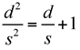
.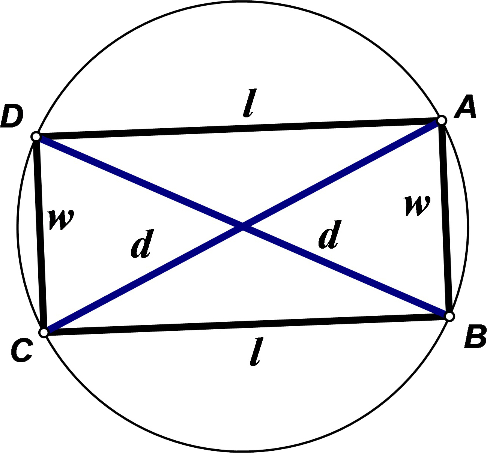
Figure 7.3.
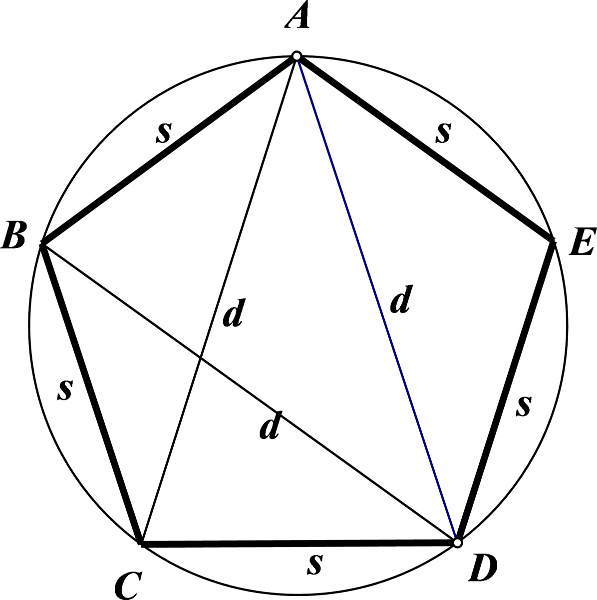
Figure 7.4.
If we let
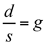
then we have g2 – g – 1 = 0. Therefore,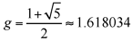
which is the golden ratio. Interested readers may want to discover the true wonders of the golden ratio, so we recommend The Glorious Golden Ratio, by A. S. Posamentier and I. Lehmann.For its time, another great work by Ptolemy was his eight-book work on geography, which was severely limited in its accuracy because there was little knowledge about the world beyond the Roman Empire and speculation was rampant. In the fifteenth century, a depiction of Ptolemy’s understanding of the world map was created, based on his description of the world map and his work in the Almagest. That map is presented here in figure 7.5.
Unfortunately, as mentioned above, we know very little about the details of Ptolemy’s life, which we believe ended in the year 170 CE in Alexandria, Egypt. Given the disparity between his brilliant geometrical theorems and his remarkable errors and inaccuracy in astronomy and geography, he was undoubtedly an intriguing figure. Here we acknowledge both aspects of his achievements and yet honor him for his famous theorem in geometry, which proves useful to this day.
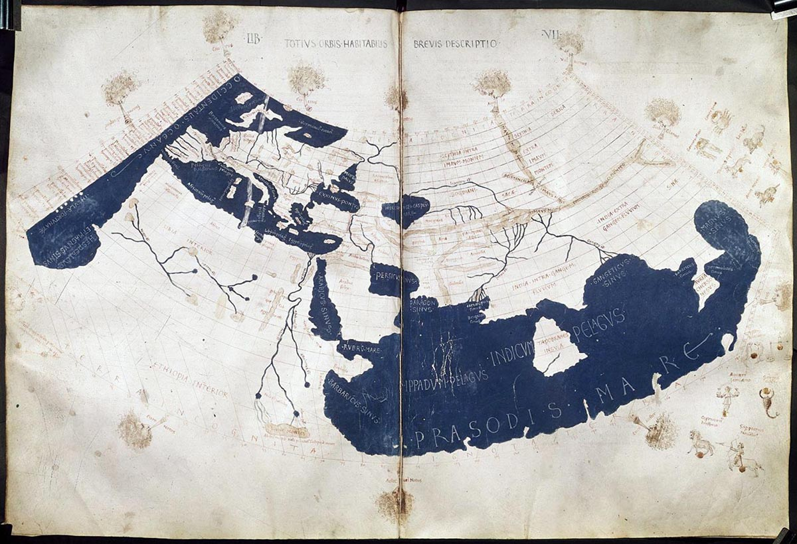
Figure 7.5. Ptolemy’s world map, as depicted in the fifteenth century, based on Ptolemy’s works and descriptions. (Francesco di Antonio del Chierico, 1433–1484, an artist of the early renaissance period, in Florence.)